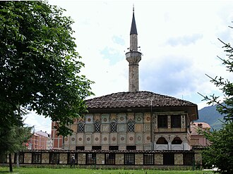

简介
La mosquée peinte de Tetovo est une mosquée ottomane située dans la ville de Tetovo, en Macédoine du Nord. Elle a été construite en 1438, et contrairement à la plupart des mosquées de l'époque, elle n'a pas été financée par un dignitaire local, mais par deux sœurs de Tetovo. Elle a été reconstruite en 1833 par Abdurrahman Pasha, un grand amateur de Tetovo et de ses richesses artistiques. La mosquée constitue l'un des monuments les plus célèbres de la ville avec l'Arabati Baba tekke.
مسجد سارينا زاميجا يقع بالقرب من نهر بينا في مدينة تيتوفو في جمهورية مقدونيا. تم الانتهاء من أعمال بناء المسجد عام 1438 وأعاد عبد الرحمن باشا بنائه في عام 1833.
Šarena Džamija, meaning Decorated Mosque in English but also variably translated as Painted Mosque, is a mosque located near the Pena River in Tetovo, North Macedonia. The mosque was originally built in 1438 and later rebuilt in 1833 by Abdurrahman Pasha. Unlike other mosques of the Classical Ottoman period, the Šarena Mosque is more characteristic of traditional mosques in Anatolia, as it was constructed before the conquest of Constantinople, when Byzantine-influenced mosque domes became the standard design.
Alaca Cami veya Paşa Camii MS 1438 yılında Kuzey Makedonya'da bulunan Osmanlı-Türk dinî eserlerinden biridir. Kalkandelen'in simge mimari yapılarındandır.
مسجد سارينا زاميجا شمال دریائے بینا کے قریب، شہر تیتوفو، جمہوریہ مقدونیا میں واقع ہے۔ اس مسجد کی تعمیر سن 1438 میں مکمل ہوئی تھی اور بعد میں عبد الرحمن پاشا نے اسے سن 1833 میں دوبارہ تعمیر کروایا۔
Die Bunte Moschee in Tetovo liegt am Fluss Pena in der Altstadt an der Kreuzung der Straßen B. Miladinovi und Ilinden neben weiteren Bauwerken aus osmanischer Zeit.
La denominada Mezquita pintada en Tetovo, Macedonia del Norte, es un lugar de culto musulmán de época otomana y uno de los más conocidos edificios de esta ciudad.
La Moschea Šarena, o Moschea Dipinta, è una moschea situata sulla riva destra del fiume Pena a Tetovo, in Macedonia del Nord. La moschea fu originariamente costruita nel 1438 e successivamente ricostruita nel 1833 da Abdurrahman Pasha. Rispetto ad altre moschee tradizionali anatoliche del periodo classico ottomano, la Moschea Šarena è più caratteristica, poiché fu costruita prima della conquista di Costantinopoli, quando le cupole delle moschee erano influenzate dall'architettura bizantina.
沙连纳清真寺 是一座位于北马其顿泰托沃佩納河畔的清真寺，始建于1438年，后在1833年由阿卜杜拉赫曼帕夏 重建。2017年3月14日，该宗教建筑群经北马其顿政府公告为具有独特重要性的特别重要文化遗产[1]。
サレナ・モスク は、北マケドニア・テトヴォのペネ川沿いにあるモスク（イスラム教寺院）である。1438年に設立、1888年にアブドゥルラーマン・パシャ（Abdurrahman）によって再建された。
शरेना जामिजा, जिसका अंग्रेज़ी में अर्थ सजावटी मस्जिद है, लेकिन इसे अक्सर चित्रित मस्जिद के रूप में भी अनुवादित किया जाता है, उत्तरी मैसेडोनिया के तेतोवो में पेना नदी के पास स्थित एक मस्जिद है। यह मस्जिद मूल रूप से 1438 में बनाई गई थी और बाद में 1833 में अब्दुर्रहमान पाशा द्वारा इसका पुनर्निर्माण किया गया था। शास्त्रीय उस्मानी काल की अन्य मस्जिदों के विपरीत, शरेना मस्जिद अनातोलिया की पारंपरिक मस्जिदों की अधिक विशेषता रखती है, क्योंकि इसका निर्माण कुस्तुनतुनिया (कांस्टेंटिनोपल) की विजय से पहले किया गया था, जब बीजान्टिन-प्रभावित मस्जिद के गुंबद एक मानक डिज़ाइन बन गए थे।
Пёстрая мечеть или Шарена Джамия — мечеть, расположенная возле реки Пена в Тетово, Северная Македония. Мечеть была построена в 1438 году и перестроена в 1833 году Абдурахман-пашой.
在地图上
资料与链接
- Wikipédia — Français
- Wikipédia — العربية
- Wikipédia — English
- Wikipédia — Türkçe
- Wikipédia — اردو
- Wikipédia — Deutsch
- Wikipédia — Español
- Wikipédia — Italiano
- Wikipédia — 中文
- Wikipédia — 日本語
- Wikipédia — हिन्दी
- Wikipédia — Русский
- Wikidata — Q1009896
数据：维基数据（Wikidata，CC0），每3个月更新一次。年份是该建筑已知最早的建造年代：对于后来才成为清真寺的建筑（如圣索菲亚），则是原建筑的年代。照片：维基共享资源（Wikimedia Commons），作者和许可协议见每张照片的页面。